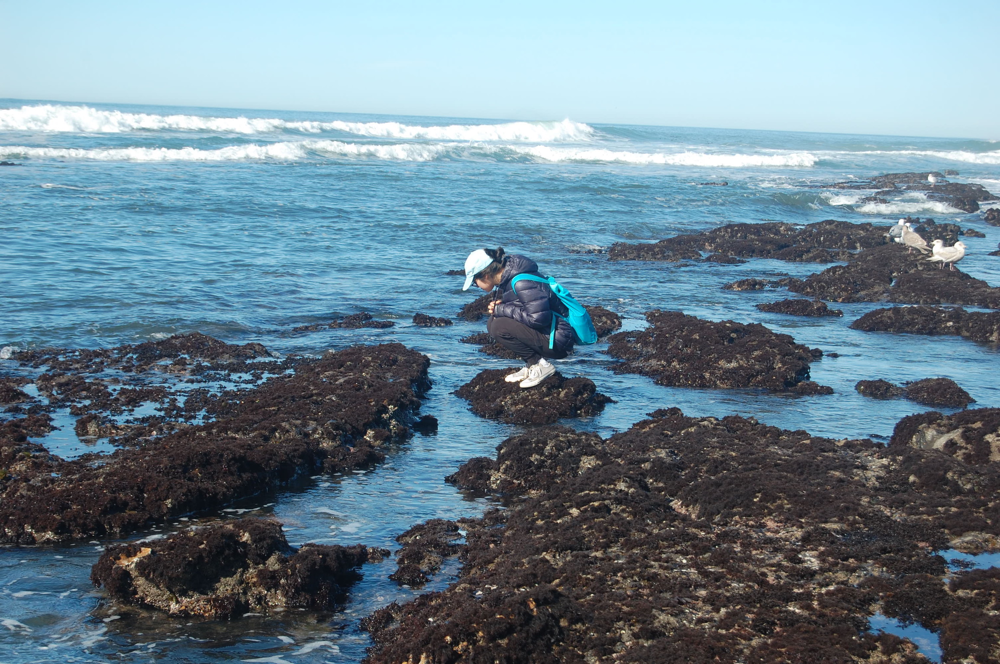

About Me

I'm endlessly curious about the natural world. Whether it's microbes deep beneath our feet, eagles soaring on updrafts governed by complicated physics, or intertidal creatures enduring dramatic extremes with incredible adaptions, there is wonder in all of it. I bring the stories to you through powerful interviews, podcast soundscapes, and data made accessible through sleek visualizations. Together, let's understand the science and, critically, how it shows up in your own life.